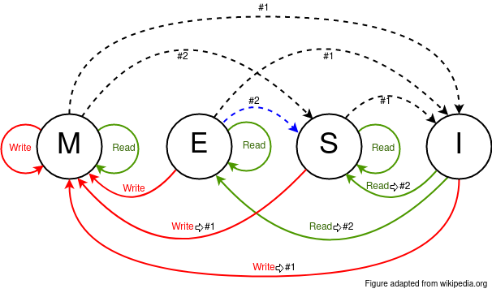

Each cache line has a state machine which operates as follows:

When reading a locally invalid line the data can be fetched from the memory or, possibly, from another cache. Other caches must be interrogated anyway, since the state transition depends on whether another cache holds the line (go to Shared) or not (go to Exclusive).
The values in the figure are addresses/tags, not data values.
Note: in this demonstration the memory is shaded to indicate the lines which are invalid - i.e. that line is 'Modified' in one of the caches. This state is not kept explicitly as part of the memory system. Its use here is simply to help with visualisation.
A subtle case: try writing on one processor and then writing the
same line on a different processor. The first processor's cache
updates the memory even though the line is about to be modified.
Note that these are cache lines, so the first write may be to
a different word in the line from the second so this ensures
that the first update is kept.
The ‘Memory’ line shows when and where the main memory is out of date.